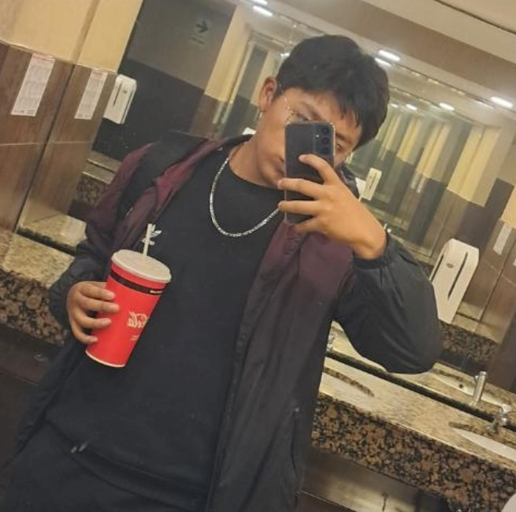

Nuestra amistad
Cuando te sentaste un día cerca de nosotras, yo pensé que sería una buena idea hablarte ujum y no me equivoqué resultaste ser una persona muy amable, muy confiable , estoy muy feliz de haberte conocido. Los tres go go nos esforzamos ese año por una meta, estoy muy feliz por todo los momentos que tenemos en el colegio y en la academia, recuerdo que eras muy paciente conmigo, Ale y tú me demostraron que es la amistad, realmente quiero ser la tía de tus hijos jsjsjs, wajaja quiero verte llegar lejos y si caes recuerda que nos tienes a nosotras, nunca lo dudes, estaremos para ti. Te quiero mucho y jsjs me gusta hablar contigo, contarte como me fue y me gusta escucharte. Me gusta que confíes en mí, me gusta cuando sonríes y dime si puedo ayudarte de alguna manera porque realmente me importa tu felicidad ujum. Eres un gran chico, uno de los más maravillosos que pude conocer, no soy muy buena con las palabras pero quiero expresar todo mi cariño hacia ti, eres mi mejor amigo, mi hermano, mi confidente, mi persona especial ujum, wajaj muchos abrazos al go cumpleañero wajjaja ya es mayor de edad y pensar que estabamos en 5to con 17 años sjjsjs, wjja como dijo tu amigo eres legal sjsj cuidado enano ujum, te quiero mucho por eso cuidate y cuentame si pasa algo sip. Siempre tendrás mi apoyo incondicional.
